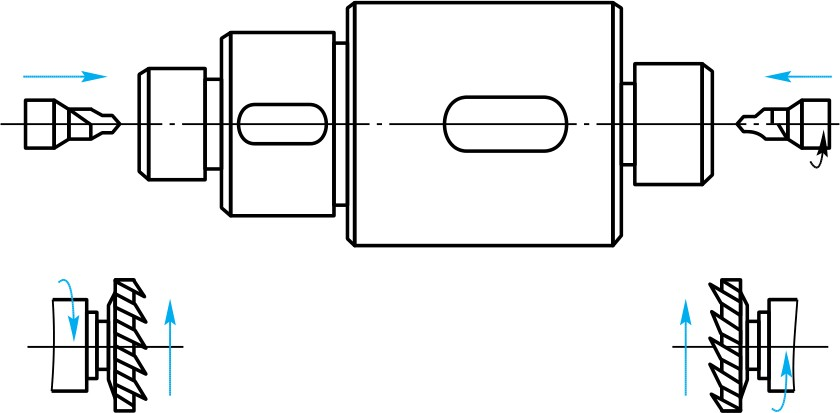
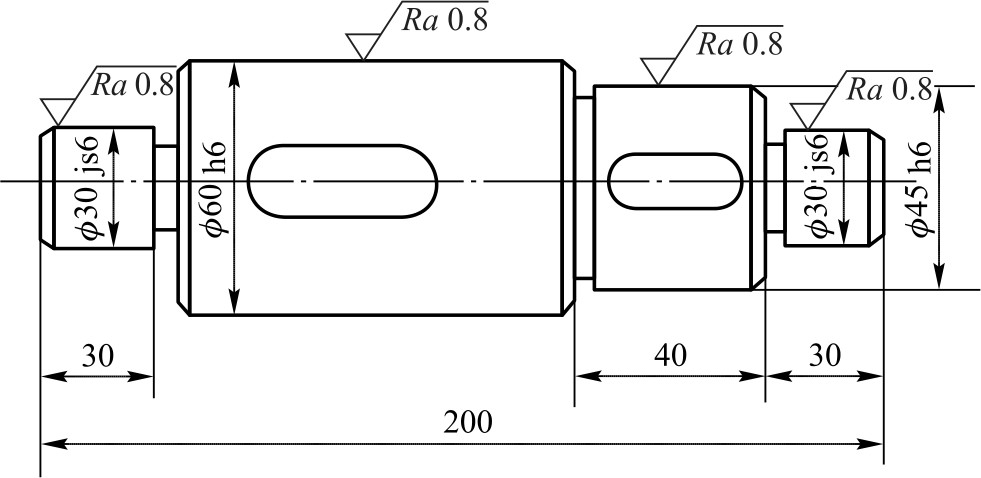
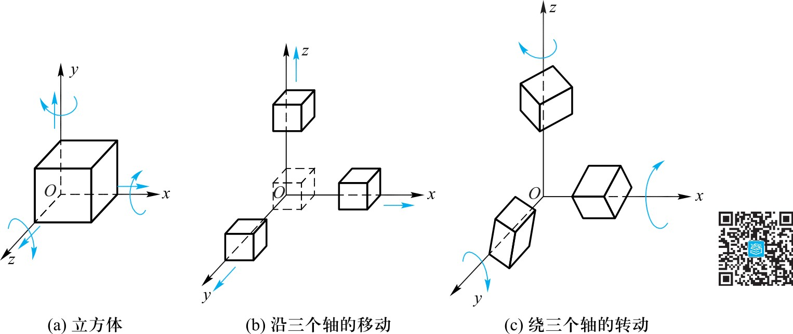
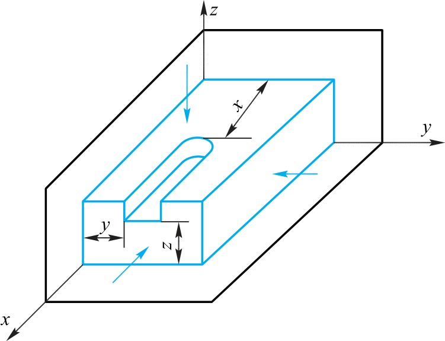
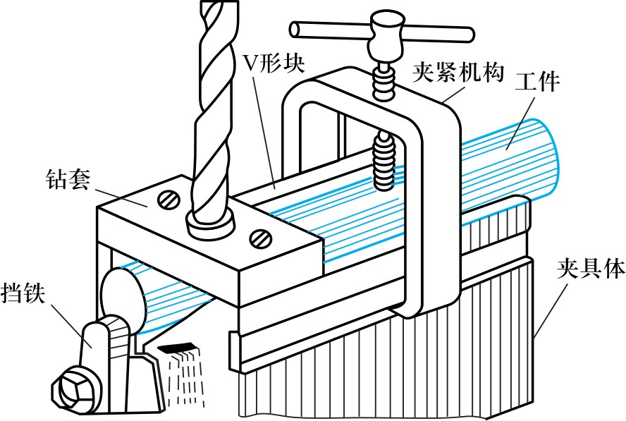
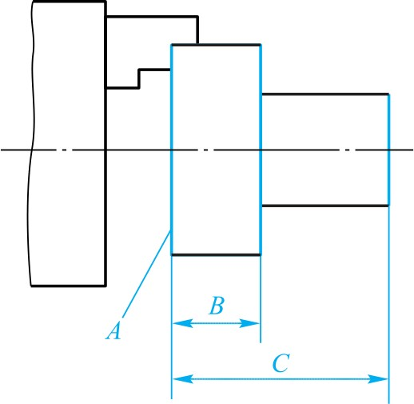
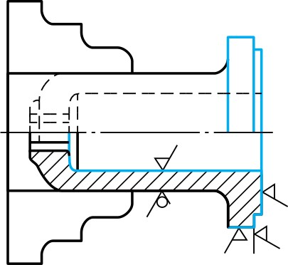
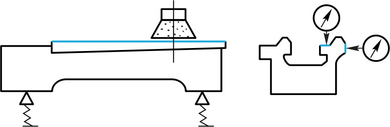
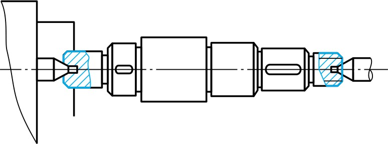
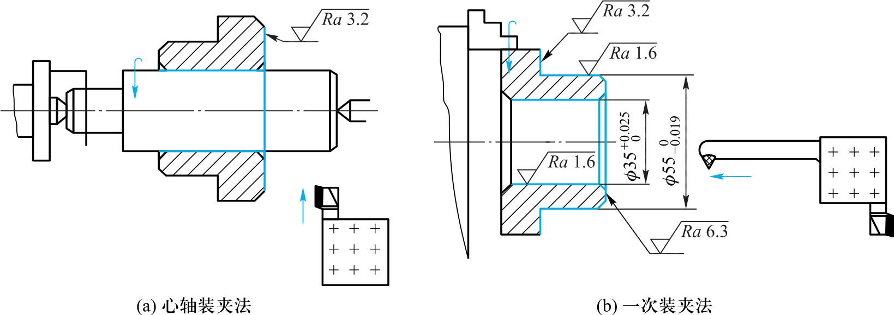

本章系统介绍机械加工工艺过程的基本概念、工件的定位与夹具、基准选择原则、工艺规程制订步骤，以及典型零件的工艺过程。
第16章 · 工程材料与机械制造基础（第3版）
BASIC CONCEPTS
生产过程：由原材料制成零件并装配成机器的全过程。包括运输、生产准备、毛坯制造、加工、热处理、装配、检验等。
工艺过程：直接改变毛坯的形状/尺寸/性能使之成为成品的过程。包括机械加工、铸造、锻造、焊接、热处理、装配等。
工艺规程：将合理的工艺编写成技术文件（工艺卡片），用于指导生产。
工序：一个工人在一台机床上对一个工件连续完成的那部分工艺过程。
安装：工件经一次装夹所完成的那部分工序。应尽量减少装夹次数。
工位：一次装夹后工件在每个加工位置上完成的那部分工序。多工位可减少安装。
工步：加工表面/刀具/切削用量不变下完成的部分。走刀：工步内每次切削。

生产纲领：包括备品率和废品率在内的年产量，是划分生产类型的依据。
单件/成批/大量三种生产类型→机床、夹具、毛坯、工艺规程、工人要求均不同。
大批量→专用高效设备，详细规程；单件→通用设备，简单路线卡，需高级技工。

WORKPIECE SETUP & FIXTURES
工件有六个自由度（沿xyz移动+绕xyz转动）。要确定位置必须约束这些自由度。
六点定位：六个支承点分布在三坐标平面内，各限制不同自由度。
实际只限制影响加工精度的自由度——并非总是限制全部六个。

完全定位：六个自由度全限制。不完全定位：未全限制但满足要求。
欠定位：应限制的未限制——不允许。
过定位（重复定位）：同一自由度被限制两次以上→工件变形或接触不良，应避免。

夹具：用于装夹工件的装置。由定位元件、夹紧装置、导向元件、夹具体组成。
通用夹具（卡盘/虎钳/分度头）和专用夹具（为特定工序设计）。
大批量→专用夹具；单件/小批→通用夹具。

DATUM & SELECTION
基准：确定几何要素间关系所依据的点线面。
设计基准：图纸上标注尺寸和位置所依据的基准。工艺基准：工艺过程中采用的基准。
定位基准的选择是工艺规程的关键。

粗基准：用未加工毛坯表面作定位基准。
①非加工面作粗基准→保证与非加工面的位置；②余量最小的表面作粗基准；
③尽量平整光洁；④粗基准只能使用一次（毛坯表面粗糙，重复精度差）。

精基准：用已加工表面作定位基准。
①基准重合：用设计基准作定位基准→避免误差。②基准统一：多工序用同一基准→减少工装。
③自为基准：研磨/珩磨以加工面本身作基准。④互为基准：高精度表面互为基准反复加工。

PROCESS PLANNING
工艺规程是指导生产的技术文件，是组织生产/计划调度/质量控制的基本依据。
内容：确定加工方法、机床、定位方案、加工顺序、切削用量、工时。
要求：保证技术要求，高效率低成本，安全可靠。
① 研究零件图——了解技术要求和关键尺寸。
② 确定毛坯类型——铸/锻/焊/型材，取决于材料/结构/批量。
③ 拟定工艺路线——确定加工顺序和定位基准。
④ 确定各工序的设备和工装——机床/刀具/夹具/量具。
⑤ 确定加工余量、工序尺寸和公差。
⑥ 确定切削用量和工时定额。
⑦ 填写工艺文件——工艺过程卡片或工序卡片。
TYPICAL PROCESSES
轴类：长度>直径。加工外圆、台阶、键槽等。
典型路线：车端面钻中心孔→粗车→半精车→铣键槽→磨外圆。
中心孔为统一精基准保证同轴度。单件工序集中，大批工序分散（专用机床）。

盘套类（齿轮/法兰盘）：孔是关键基准。路线：粗车→钻孔→精车→磨孔→磨外圆。粗基准：外圆；精基准：内孔。
箱体类：尺寸大/壁薄/孔系多。原则：先面后孔——先加工平面再加工孔系。
精基准：一面两销（一个平面+两个定位销孔）——基准统一。

掌握工艺过程组成、工件定位与基准选择、工艺规程制订方法，是合理编制零件加工工艺的基础。